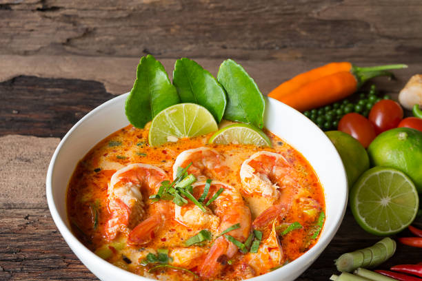

Tom Yum Soup

Description
Tom yum or tom yam is a type of hot and sour
Thai soup,
usually cooked with shrimp (prawn).
Tom yum has its origin in Thailand.
The words "tom yam" are derived from two Thai words. Tom refers to the boiling process,
while yam means 'mixed'. Tom yum is characterised by its distinct hot and sour flavours,
with fragrant spices and herbs generously used in the broth. The soup is also made with
fresh ingredients such as lemongrass, kaffir lime leaves, galangal, lime juice, fish sauce,
and crushed red chili peppers.
There are many variations of the tom yam soup , depending on the ingredients . This page is
describing a custom pork version
Ingredients
- 2 stalks of Lemongrass
- 1,5cm of Galangal, cut into 4 pieces
- 5 Makrut lime leaves (aka kaffir lime leaves)
- 1 tablespoon of Thai Chili Paste (Nam Prik Pao)
- 125 ml of Fish Sauce
- 350g of Pork Thigh
- 2 Thai Bird's Eye Chilies
- Noodles or Steamed Rice (optional)
Steps
- Add 800 ml of water in your pot and start boiling it in high heat
- Once the first boiling bubbles appear , put inside the appropriate portions of lemongrass,galangal and lime leaves (the non-edible druidish stuff)
- When the water starts is yellowish ennough , add the chili paste and fish sauce
- The soup is now getting the red color we want and is boiling hot , that's when we add the chicken
- When the pork is clearly visible in the surface , it means that it has been cooked and you are almost ready to eat!
- Lower the heat and add the chilies for extra spiciness
- Congratulations ! You've just made easily an elixir like soup , may your hunger and every pain of your mind and body go away!
Optional Steps
- These steps are recommended if you want to make your soup more sated
- You can add any kind of noodles you like in step 4 with the pork
- Or maybe you have some steamed rice left or just cooked , so when you serve the soup in a bowl you can add the rice!
- And that was it !